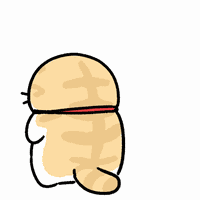

28 · 10 · 10 시간 전 · 원문
익숙한 동물들과 아서 모건의 목소리가 들린다 들려
수집 당시 댓글 10개
피릉피릉 · 13 시간 전
닉드코바 · 13 시간 전
ㅋㅋㅋㅋㅋ시발 진짜 아서네
항만가이 · 13 시간 전
더치는 역시 플랜이 있었어
으럇으럇으으럇 · 12 시간 전

슈슈슈슈퍼커브 · 11 시간 전
진짜 아서잖아ㅋㅋㅋ
정중한싸대기 · 10 시간 전
ㅋㅋ그리고 저 장소 실제 레데리2에 있는 장소임
맵 오른쪽 앤즈버그 북쪽 강가
↳ 답글 · Montmartre · 6 시간 전
ㅋㅋㅋㅋㅋㅋ인게임내서 촬영했네
khruangbin · 10 시간 전
3성 쿠거 잡으려고 노가다 하던 곳이네 ㅋㅋ
주계피 · 10 시간 전
저 바탕체는 여전하네 ㅋㅋㅋㅋㅋㅋㅋ
Rectify · 5 시간 전
Roger Clark returns as Arthur Morgan for an in-game TV commercial in 'Grand Theft Auto VI.'
(Source: IGN)
맞나보네
댓글
수집 당시 댓글 10개
피릉피릉 · 13 시간 전
닉드코바 · 13 시간 전
ㅋㅋㅋㅋㅋ시발 진짜 아서네
항만가이 · 13 시간 전
더치는 역시 플랜이 있었어
으럇으럇으으럇 · 12 시간 전

슈슈슈슈퍼커브 · 11 시간 전
진짜 아서잖아ㅋㅋㅋ
정중한싸대기 · 10 시간 전
ㅋㅋ그리고 저 장소 실제 레데리2에 있는 장소임
맵 오른쪽 앤즈버그 북쪽 강가
· Montmartre · 6 시간 전
ㅋㅋㅋㅋㅋㅋ인게임내서 촬영했네
khruangbin · 10 시간 전
3성 쿠거 잡으려고 노가다 하던 곳이네 ㅋㅋ
주계피 · 10 시간 전
저 바탕체는 여전하네 ㅋㅋㅋㅋㅋㅋㅋ
Rectify · 5 시간 전
Roger Clark returns as Arthur Morgan for an in-game TV commercial in 'Grand Theft Auto VI.'
(Source: IGN)
맞나보네